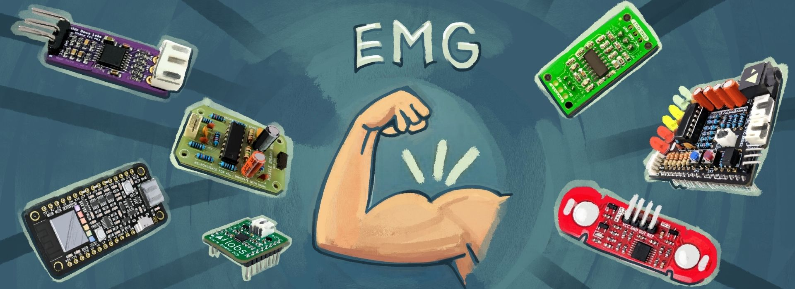
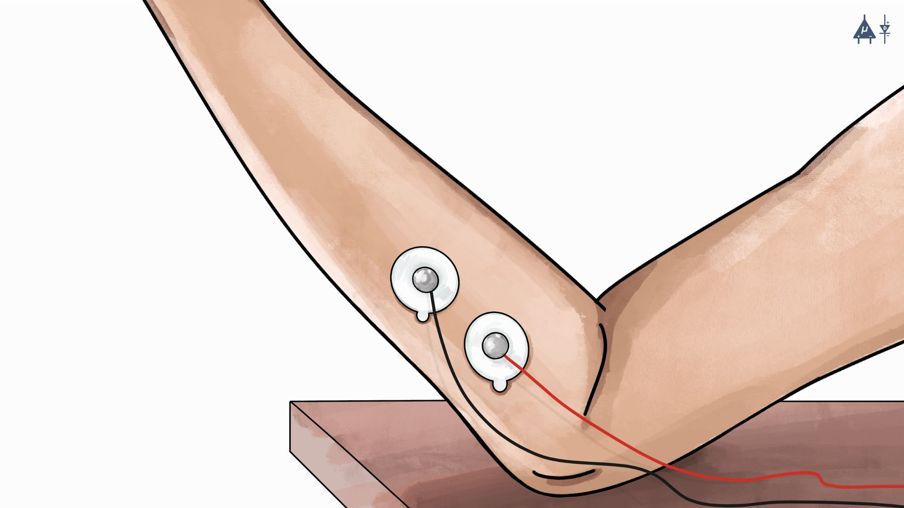
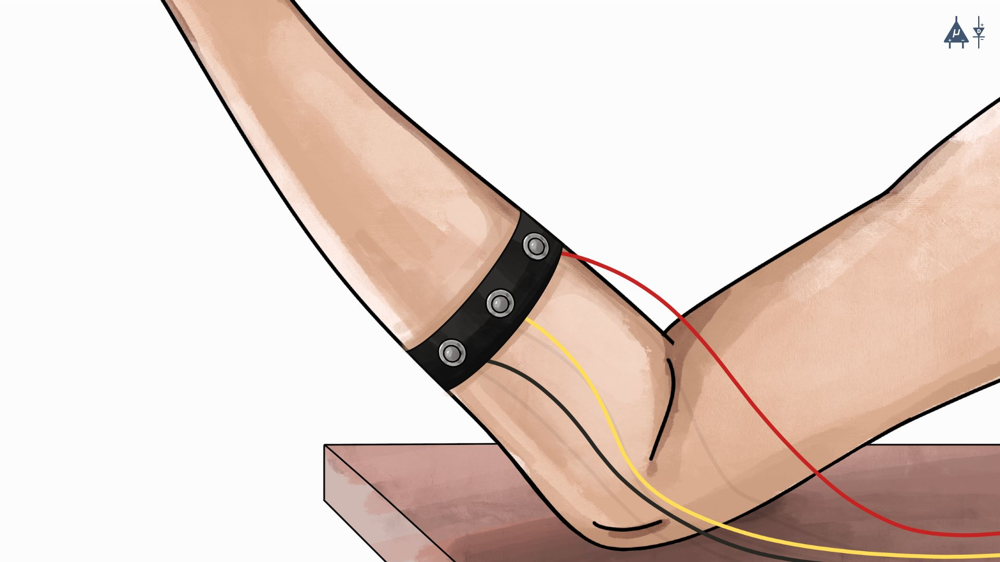
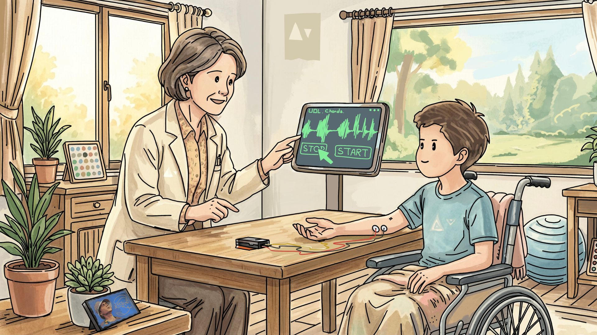

Module 7: EMG#

Basic Terminology#
Electromyography (EMG): Electromyography is a neurophysiological technique used to measure and evaluate the electrical activity generated by skeletal muscles during both rest and contraction. It involves recording the biopotential signals produced by muscle fibers when they are activated by motor neurons. EMG is widely used to study neuromuscular function, diagnose neuromuscular disorders, and assess muscle performance.
Electromyograph: An electromyograph is the specialized electronic instrument used to detect, amplify, and record the electrical signals produced by muscle fibers. The device typically consists of electrodes (surface or needle), amplifiers, filters, and recording systems that capture and process muscle electrical activity for analysis.
Electromyogram: An electromyogram refers to the graphical or recorded representation of the electrical activity of a muscle obtained during electromyography. It displays the amplitude and frequency characteristics of muscle electrical signals over time, allowing interpretation of muscle activation patterns and neuromuscular function.
Note
If you want to know detailed history of EMG, you can refer to this section: History of EMG
Types of EMG: There are many different types of EMG. The main two types are
Surface EMG (non-invasive)
Needle (or Intramuscular) EMG
Since our devices can record surface EMG, we will discuss it in detail.
Surface EMG (sEMG)#
7.1 Introduction#
Surface Electromyography (sEMG) is a non-invasive (a procedure that does not require inserting an instrument through the skin or into a body opening) technique used to measure the electrical activity of muscles, which can provide valuable information about the function of the neuromuscular junction (NMJ), the site where nerve fibers connect to muscle fibers. Although sEMG does not directly measure the activity at the NMJ, it can provide indirect insights into the functioning of this critical site through the electrical activity it detects in muscles.
EMG frequency range: The EMG signal ranges from 10 to 500 Hz in frequency, but most of its useful energy is concentrated between 50 and 150 Hz [1]
7.2 Basic principle#
Surface EMG detects the electrical signals generated by muscle fibers during contraction or at rest. These signals, known as motor unit action potentials (MUAPs), are transmitted through the skin and can be detected by electrodes placed on the surface of the skin above the muscle.
7.3 How it works#
7.3.1 Electrode Placement#
In surface EMG, small sensors called electrodes are placed on the skin directly above the muscle being studied. These are usually pre-gelled (Gel electrodes) or dry electrodes (BioAmp bands) which stick to the skin and may not require conductive gel.

Using gel electrodes for surface EMG recording#

Using dry electrodes (BioAmp Bands) for surface EMG recording#
Note
To know more about electrodes please refer the following link :
7.3.2 Signal Detection#
When the muscle contracts, it creates tiny electrical signals. The electrodes pick up these voltage changes called motor unit action potentials.
7.3.3 Signal Amplification and Filtering#
Since these signals are extremely weak (measured in microvolts), they are first amplified to make them readable. Then, unwanted noise, such as motion artifacts or interference from other body signals, such as cardiac signals, is filtered out to ensure the recorded data is clean and accurate.
7.4 Key Components of a sEMG System#
7.4.1 Surface Electrodes#
These are electrodes placed on the skin surface to detect the electrical activity generated by underlying skeletal muscles. They are typically positioned parallel to the orientation of muscle fibers to obtain a stronger and more reliable signal, as this alignment improves the detection of motor unit action potentials.
7.4.2 Amplifier#
The amplifier is used to increase the amplitude of the very small electrical signals produced by muscle fibers. These signals are usually in the microvolt (µV) range, so amplification often by a factor of ×1000 or more is required to make them measurable by electronic systems. This amplification enables the Analog to Digital Converter (ADC) of the development board to accurately digitize the biopotential signals recorded from the body.
Upside Down Labs Hardware compatible with sEMG signal acquisition and processing:
7.4.3 Analog-to-Digital Converter (ADC)#
After amplification, the signals are digitized for analysis. We use different types of development boards like Arduino UNO R3, Arduino UNO R4 Minima/WiFi, Raspberry Pi Pico, etc. Some BioAmps like BioAmp EXG Pill and Muscle BioAmp Patchy are compatible only with 5 V so you should use Arduino UNO.
Note
We recommend using Arduino UNO R4 Minima for the best compatibility and high ADC resolution of 14 bits.
7.4.4 Software for Signal Processing#
We offer our own open source Chords software suite, featuring tools for signal visualization, data recording (with easy save and download options), time-based plotting, and a host of other benefits—such as analyzing signal frequencies and bandpower.
7.5 Applications of sEMG#
7.5.1 Clinical Applications#

EMG clinical applications (rehabilitation)#
Surface EMG (sEMG) plays an important role in healthcare, especially for diagnosing and treating muscle and nerve related problems:
Neurological disorders: Clinicians use sEMG to diagnose conditions such as muscular dystrophy, amyotrophic lateral sclerosis (ALS), myasthenia gravis, and carpal tunnel syndrome. By looking at abnormal muscle activation patterns, clinicians can spot problems that might not show up on standard tests. [2]
Muscle Weakness and Fatigue: It’s very useful for assessing how well muscles work in patients who experience weakness, chronic fatigue, or paralysis (for example, after a stroke or spinal cord injury). [3]
Biofeedback Therapy: Patients can see their own muscle activity in real time on a screen and learn to control it better. This is especially helpful in rehabilitation after injuries, surgeries, or neurological events. [4]
7.5.2 Sports Science and Biomechanics [5]#
EMG applications in sports and exercise science#
In sports and exercise, sEMG gives coaches and athletes detailed insight into what the muscles are actually doing:
Performance Monitoring: By recording which muscles fire, when, and how hard during training or competition, athletes and trainers can create more effective programs, improve strength and power, and reduce the risk of injuries.
Movement Analysis: It reveals the exact timing and intensity of muscle activation in actions like running, jumping, throwing, or weightlifting. This information helps refine technique, correct imbalances, and boost overall performance.
7.5.3 Prosthetics and Robotics#
EMG applications in prosthetics and robotics#
One of the most life-changing uses of sEMG is in controlling artificial limbs and assistive devices:
Control of Prosthetic Limbs: People with amputations can use the remaining muscle signals in their stump (residual limb) to operate advanced prosthetic arms or hands. When they think about moving the missing limb, the small electrical signals produced by the muscles are picked up by surface electrodes and translated into natural movements (grasping, rotating the wrist, etc.). [6]
Robotics and Exoskeletons: The same principle powers robotic exoskeletons and assistive robots. For someone with paralysis or severe weakness, the tiny muscle signals they can still produce allow intuitive control of a powered exoskeleton that helps them stand, walk, or lift objects. [7]
Human-Machine Interfaces: Beyond prosthetics, sEMG can also function as an input signal for controlling computers and electronic systems. Muscle activity from the forearm can be used for gesture recognition, computer interaction, gaming systems, and assistive technologies such as wheelchairs or smart home devices, providing intuitive control for users. [8]
Ergonomics and Occupational Health: Surface electromyography (sEMG) is widely used in ergonomics to evaluate muscle activity and workload during occupational tasks. By measuring muscle activation patterns during repetitive or physically demanding work, researchers can identify excessive muscular strain that may lead to fatigue or injury. sEMG analysis helps improve workplace design, posture, and tool ergonomics, thereby reducing the risk of musculoskeletal disorders and repetitive strain injuries in workers. [9]
Projects Using EMG#
You can utilize our BioAmp Hardware to create various applications. We’ve successfully developed multiple applications, so there’s nothing holding you back from creating something innovative and outstanding. A few applications of our devices are highlighted below:
7.6 Advantages of Surface EMG#
Non invasive
Easy and quick
Real time feedback
Safe for everyone
Low cost
No radiation
Long time monitoring possible
Useful during dynamic movements
Simultaneous recording from multiple muscles
7.7 Limitations of sEMG#
Unable to record deep muscle activity:
sEMG only measures superficial muscle activity.
Deep muscles require intramuscular (fine-wire) EMG.
Sensitivity to skin preparation:
Poor skin preparation, sweat, hair, or improper electrode placement affect readings.
High skin impedance reduces accuracy.
Crosstalk (Interference from Nearby Muscles):
Electrodes capture signals from multiple adjacent muscles.
Difficult to isolate activity of small or deep muscles.
Movement artifacts:
Body movement causes electrode displacement which generates false signals.
Cable movement can also introduce noise.
Influence of Adipose Tissue:
A thick layer of subcutaneous adipose tissue between the muscle and skin surface can attenuate and filter the EMG signal, reducing signal amplitude and accuracy.
Limited Spatial Resolution:
Surface EMG records the combined activity of multiple motor units within a muscle region, making it difficult to distinguish the activity of individual motor units.
Susceptibility to External Electrical Noise:
sEMG signals can be affected by electromagnetic interference from surrounding electrical devices or power lines (50/60 Hz noise), which may contaminate the recorded signal if proper filtering and grounding are not used.
Inter-individual Variability:
sEMG signals may vary between individuals due to differences in skin thickness, electrode placement, muscle anatomy, and physiological factors, which can make comparisons across subjects challenging.
7.8 Summary#
In this module, we studied the basics of EMG, its terminology, and focused on Surface EMG (sEMG) as a non-invasive method to measure muscle electrical activity. We learned how sEMG works, including electrode placement, signal detection, amplification, and processing. This module discussed its major applications in clinical diagnosis, sports, rehabilitation, prosthetics, and robotics, along with advantages like real-time feedback and non-invasiveness. We also covered limitations such as crosstalk, movement artifacts, and inability to detect deep muscles, and highlighted its potential in future biomedical and technological innovations.